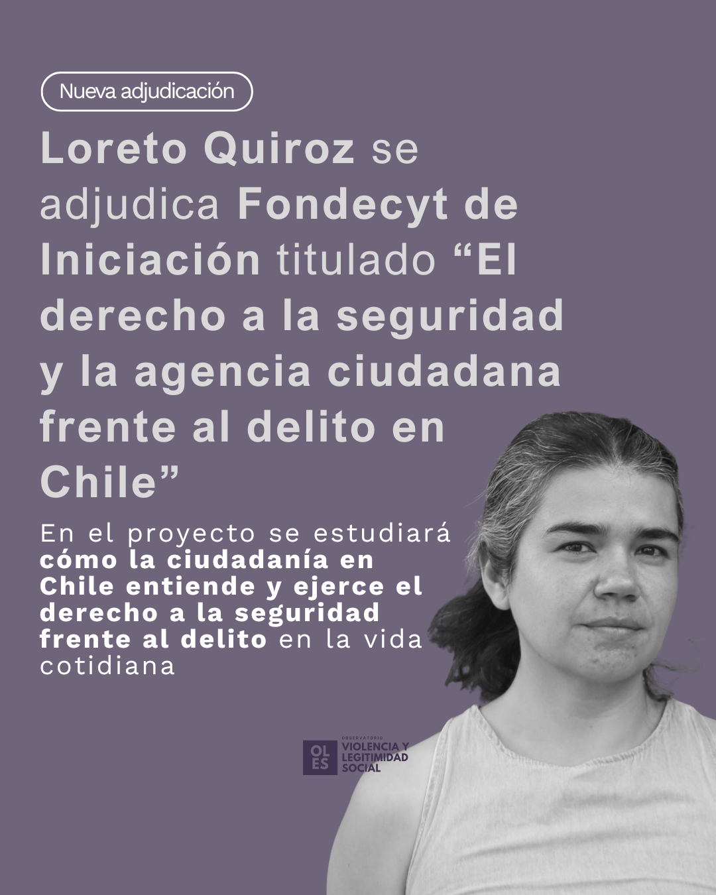

Últimas noticias y novedades del Observatorio de Legitimidad.

<a…
<a href=‘https://socialesehistoria.udp.cl/macaren-orchard-participo-en-foro-sobre-violencias-en-la-movilizacion-social-y-la-protesta/’…
<a href=‘https://psicologia.udp.cl/profesora-monica-gerber-se-adjudica-fondo-asociativo-udp-2020-como-investigadora-principal/’…
:::